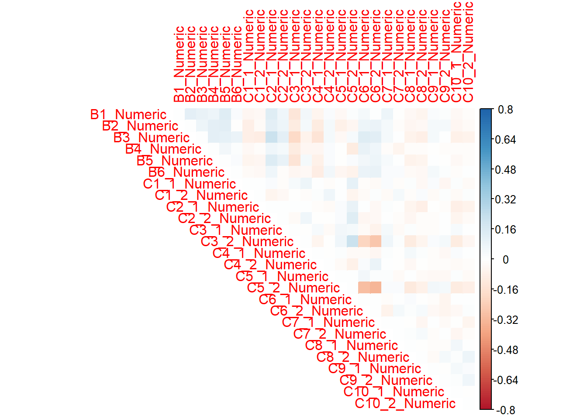
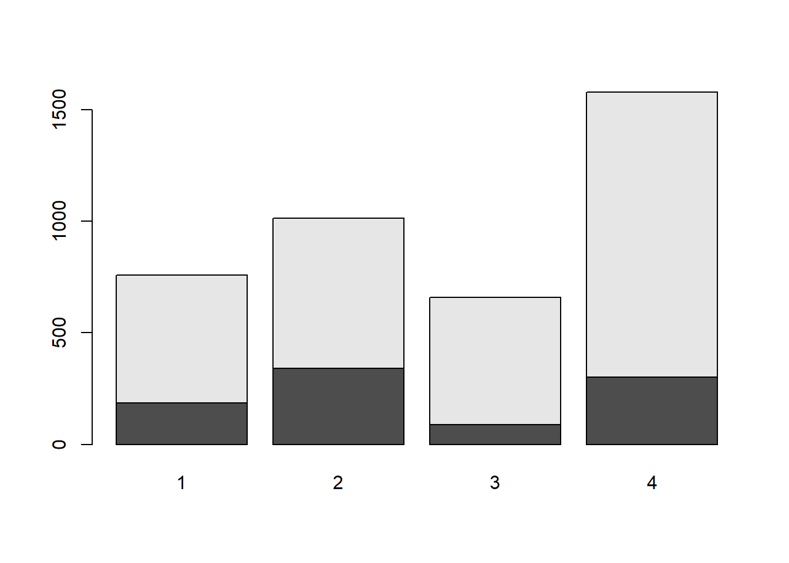
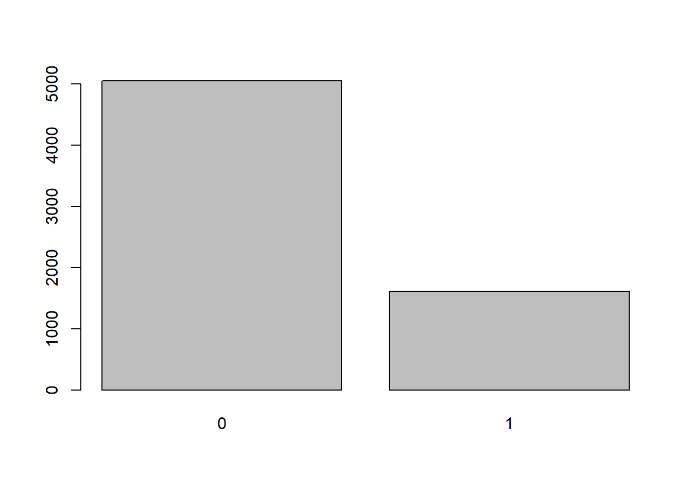
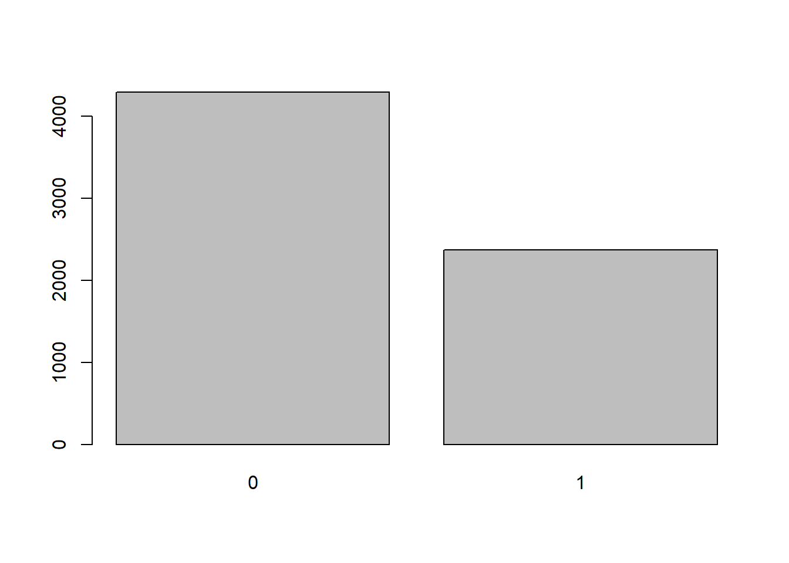
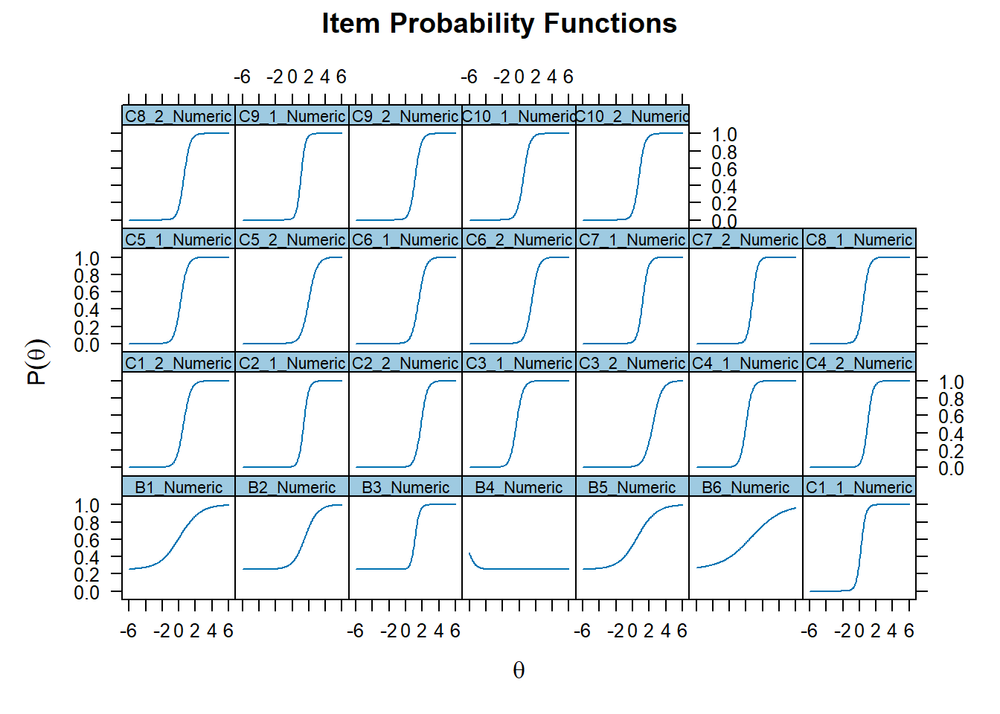
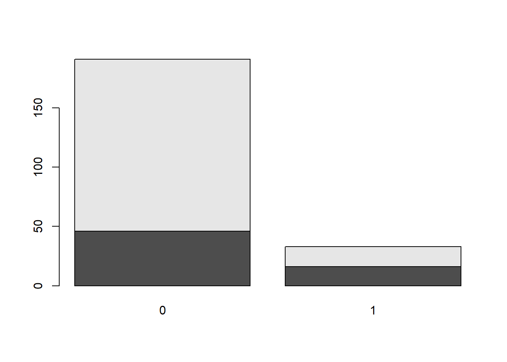
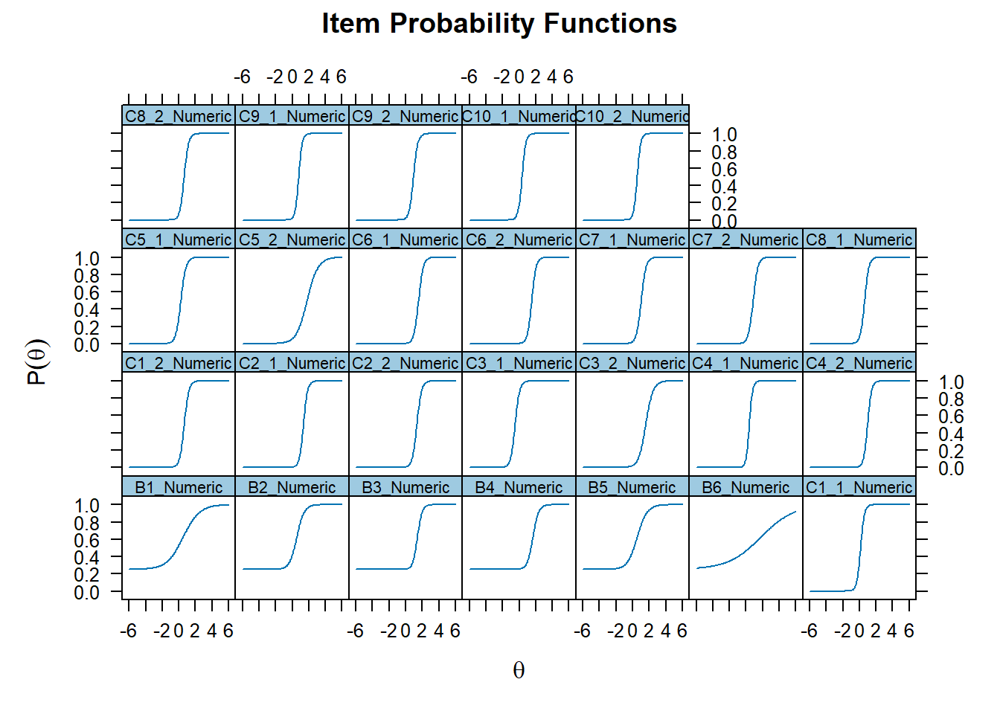
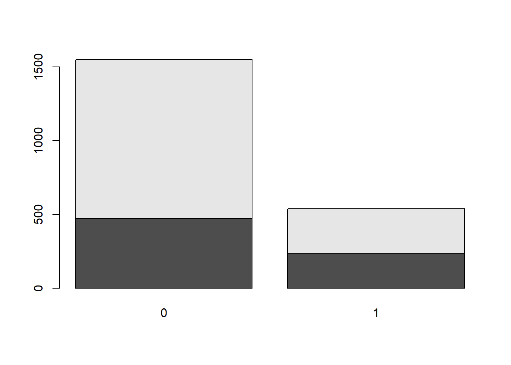
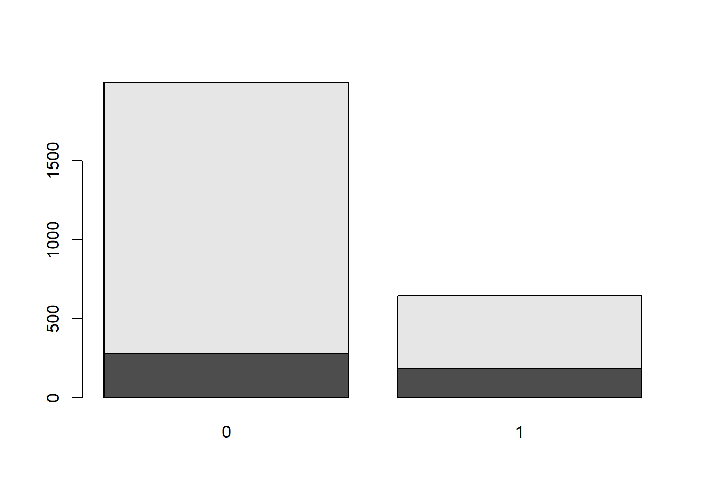
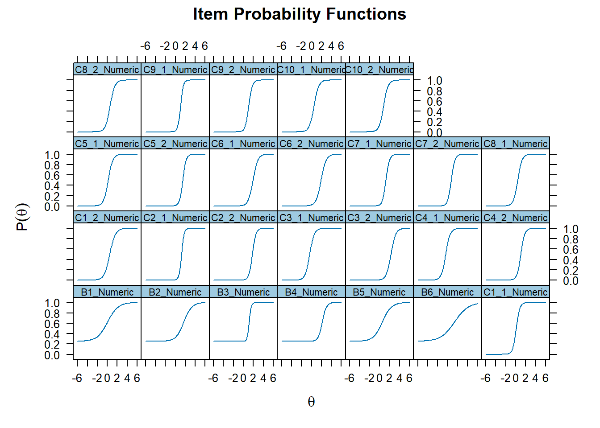

First analysis AK
To the other pages
Art Knowledge
This graph represent the distribution of the score of the AK scale
Internal reliability
The McDonald’s omega indicate a good internal reliability
[1] 0.9249673Confirmatory factor analysis
One factor model
chisq df pvalue cfi tli
2699.650 289.000 NA 0.994 0.994
rmsea rmsea.ci.lower rmsea.ci.upper rmsea.pvalue srmr
0.036 0.034 0.037 1.000 0.061 
Item Responce Theory
Full scale results
The Part B and C of the analysis are going to be run using different models.





F1 h2
B1_Numeric 0.434 0.189
B2_Numeric 0.619 0.383
B3_Numeric 0.912 0.832
B4_Numeric -0.762 0.581
B5_Numeric 0.462 0.213
B6_Numeric 0.304 0.093
C1_1_Numeric 0.896 0.803
C1_2_Numeric 0.809 0.655
C2_1_Numeric 0.888 0.789
C2_2_Numeric 0.847 0.718
C3_1_Numeric 0.837 0.700
C3_2_Numeric 0.746 0.557
C4_1_Numeric 0.851 0.724
C4_2_Numeric 0.881 0.776
C5_1_Numeric 0.832 0.692
C5_2_Numeric 0.771 0.595
C6_1_Numeric 0.819 0.670
C6_2_Numeric 0.822 0.676
C7_1_Numeric 0.871 0.759
C7_2_Numeric 0.891 0.794
C8_1_Numeric 0.861 0.741
C8_2_Numeric 0.855 0.731
C9_1_Numeric 0.910 0.827
C9_2_Numeric 0.864 0.747
C10_1_Numeric 0.841 0.708
C10_2_Numeric 0.858 0.737
SS loadings: 16.688
Proportion Var: 0.642
Factor correlations:
F1
F1 1Original
The Part B and C of the analysis are going to be run using different models.
item position item_type
1 B1_Numeric 1 3PL
2 B2_Numeric 2 3PL
3 B3_Numeric 3 3PL
4 B4_Numeric 4 3PL
5 B5_Numeric 5 3PL
6 B6_Numeric 6 3PL
7 C1_1_Numeric 7 2PL
8 C1_2_Numeric 8 2PL
9 C2_1_Numeric 9 2PL
10 C2_2_Numeric 10 2PL
11 C3_1_Numeric 11 2PL
12 C3_2_Numeric 12 2PL
13 C4_1_Numeric 13 2PL
14 C4_2_Numeric 14 2PL
15 C5_1_Numeric 15 2PL
16 C5_2_Numeric 16 2PL
17 C6_1_Numeric 17 2PL
18 C6_2_Numeric 18 2PL
19 C7_1_Numeric 19 2PL
20 C7_2_Numeric 20 2PL
21 C8_1_Numeric 21 2PL
22 C8_2_Numeric 22 2PL
23 C9_1_Numeric 23 2PL
24 C9_2_Numeric 24 2PL
25 C10_1_Numeric 25 2PL
26 C10_2_Numeric 26 2PL

F1 h2
B1_Numeric 0.513 0.263
B2_Numeric 0.801 0.642
B3_Numeric 0.905 0.819
B4_Numeric 0.864 0.746
B5_Numeric 0.706 0.498
B6_Numeric 0.283 0.080
C1_1_Numeric 0.933 0.870
C1_2_Numeric 0.911 0.829
C2_1_Numeric 0.923 0.851
C2_2_Numeric 0.909 0.826
C3_1_Numeric 0.911 0.830
C3_2_Numeric 0.810 0.655
C4_1_Numeric 0.952 0.905
C4_2_Numeric 0.927 0.859
C5_1_Numeric 0.888 0.789
C5_2_Numeric 0.670 0.449
C6_1_Numeric 0.905 0.820
C6_2_Numeric 0.914 0.835
C7_1_Numeric 0.897 0.804
C7_2_Numeric 0.903 0.815
C8_1_Numeric 0.916 0.838
C8_2_Numeric 0.919 0.844
C9_1_Numeric 0.942 0.887
C9_2_Numeric 0.916 0.840
C10_1_Numeric 0.935 0.874
C10_2_Numeric 0.940 0.884
SS loadings: 19.355
Proportion Var: 0.744
Factor correlations:
F1
F1 1VAIAK - R
The Part B and C of the analysis are going to be run using different models.

F1 h2
B1_Numeric 0.366 0.134
B2_Numeric 0.565 0.320
B3_Numeric 0.903 0.815
B4_Numeric 0.839 0.703
B5_Numeric 0.330 0.109
B6_Numeric 0.389 0.151
C1_1_Numeric 0.924 0.854
C1_2_Numeric 0.868 0.754
C2_1_Numeric 0.855 0.731
C2_2_Numeric 0.792 0.627
C3_1_Numeric 0.894 0.799
C3_2_Numeric 0.599 0.359
C4_1_Numeric 0.917 0.841
C4_2_Numeric 0.920 0.846
C5_1_Numeric 0.865 0.749
C5_2_Numeric 0.588 0.346
C6_1_Numeric 0.870 0.756
C6_2_Numeric 0.887 0.786
C7_1_Numeric 0.881 0.776
C7_2_Numeric 0.928 0.862
C8_1_Numeric 0.903 0.815
C8_2_Numeric 0.909 0.826
C9_1_Numeric 0.907 0.823
C9_2_Numeric 0.861 0.741
C10_1_Numeric 0.873 0.763
C10_2_Numeric 0.899 0.809
SS loadings: 17.097
Proportion Var: 0.658
Factor correlations:
F1
F1 1NA


F1 h2
B1_Numeric 0.491 0.241
B2_Numeric 0.595 0.355
B3_Numeric 0.948 0.898
B4_Numeric 0.819 0.670
B5_Numeric 0.543 0.295
B6_Numeric 0.394 0.155
C1_1_Numeric 0.858 0.736
C1_2_Numeric 0.725 0.526
C2_1_Numeric 0.919 0.845
C2_2_Numeric 0.864 0.747
C3_1_Numeric 0.793 0.628
C3_2_Numeric 0.783 0.613
C4_1_Numeric 0.797 0.635
C4_2_Numeric 0.834 0.696
C5_1_Numeric 0.785 0.616
C5_2_Numeric 0.868 0.754
C6_1_Numeric 0.777 0.603
C6_2_Numeric 0.756 0.571
C7_1_Numeric 0.855 0.731
C7_2_Numeric 0.856 0.733
C8_1_Numeric 0.806 0.649
C8_2_Numeric 0.783 0.612
C9_1_Numeric 0.906 0.821
C9_2_Numeric 0.858 0.736
C10_1_Numeric 0.783 0.613
C10_2_Numeric 0.791 0.626
SS loadings: 16.106
Proportion Var: 0.619
Factor correlations:
F1
F1 1We can notice that it is in general pretty normally distributed around 0, with a limited skewness into the lower values.